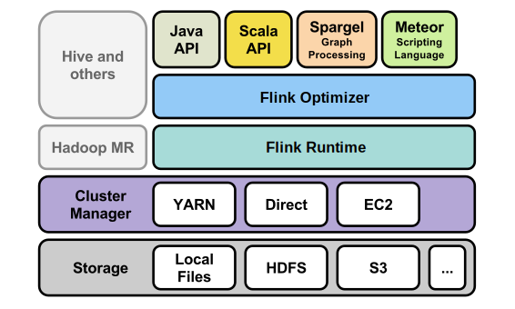

<div class="row">
  <div class="col-md-12">
    <p class="lead text-center">Apache Flink is a platform for efficient, distributed, general-purpose data processing.</p>

    <div class="startpage-buttons">
      <a href="https://github.com/stratosphere/stratosphere/releases/download/release-0.5.1/stratosphere-bin-0.5.1.tgz">
        <button type="button" class="btn btn-primary btn-lg">
          <i class="fa fa-download"></i> Download 0.5.1<br/>
          (Pre Apache)
        </button>
      </a>

       <a href="https://github.com/apache/incubator-flink">
          <button type="button" class="btn btn-info btn-lg">
            <i class="fa fa-github"></i> View on GitHub
          </button>
        </a>
    </div>

    <div class="startpage-buttons">
      <a href="community.html#mailing-lists">
        <button type="button" class="btn btn-default btn-lg">
          <i class="fa fa-send"></i> Mailing Lists
        </button>
      </a>

      <a href="https://issues.apache.org/jira/browse/FLINK ">
        <button type="button" class="btn btn-default btn-lg">
          <i class="fa fa-coffee"></i> Issues
        </button>
      </a>
    </div>

    <div class="panel panel-warning">
      <div class="panel-heading">
        Note
      </div>
      <div class="panel-body">
        Apache Flink originated from the <a href="http://stratosphere.eu">Stratosphere project</a> and is currently moving to the Apache Incubator. The first Apache release is under preparation - the latest stable release of the system is from the Stratosphere project.
      </div>
    </div>

    <hr class="divider">

    <h1>What is Apache Flink?</h1>

    <p>Flink features powerful programming abstractions in Java and Scala, a high-performance runtime, and automatic program optimization. It has native support for iterations, incremental iterations, and programs consisting of large DAGs of operations.</p>

    <div class="row">
      <div class="col-md-12"><h2>Concise and Expressive APIs</h2></div>
    </div>
    <div class="row">
      <div class="col-md-6">
<p>Flink allows you to express algorithms in a concise fashion in the programming languages Java and Scala.
Programs may freely compose many operations to long pipelines and mix and match built-in operations and
user-defined functions.</p>

<p>Flink programs have support for highly efficient <strong>iterative algorithms</strong>, allowing the system to model
complex tasks efficiently.</p>

      </div>
      <div class="col-md-6">

<div class="highlight"><pre><code class="java"><span class="n">DataSet</span><span class="o">&lt;</span><span class="n">String</span><span class="o">&gt;</span> <span class="n">input</span> <span class="o">=</span> <span class="n">env</span><span class="o">.</span><span class="na">readTextFile</span><span class="o">(</span><span class="n">inputPath</span><span class="o">)</span>

<span class="n">input</span><span class="o">.</span><span class="na">flatmap</span><span class="o">(</span><span class="k">new</span> <span class="n">FlatMapFunction</span><span class="o">()</span> <span class="o">{</span>
   <span class="kd">public</span> <span class="kt">void</span> <span class="nf">flatMap</span><span class="o">(</span><span class="n">String</span> <span class="n">value</span><span class="o">,</span> <span class="n">Collector</span> <span class="n">out</span><span class="o">)</span> <span class="o">{</span>
       <span class="k">for</span> <span class="o">(</span><span class="n">String</span> <span class="n">s</span> <span class="o">:</span> <span class="n">value</span><span class="o">.</span><span class="na">split</span><span class="o">(</span><span class="s">&quot; &quot;</span><span class="o">))</span> <span class="o">{</span>
           <span class="n">out</span><span class="o">.</span><span class="na">collect</span><span class="o">(</span><span class="k">new</span> <span class="n">Tuple2</span><span class="o">&lt;</span><span class="n">String</span><span class="o">,</span> <span class="n">Long</span><span class="o">&gt;(</span><span class="n">s</span><span class="o">,</span> <span class="mi">1L</span><span class="o">);</span>
       <span class="o">}</span>
   <span class="o">}</span>
<span class="o">})</span>
<span class="o">.</span><span class="na">groupBy</span><span class="o">(</span><span class="mi">0</span><span class="o">)</span>
<span class="o">.</span><span class="na">sum</span><span class="o">(</span><span class="mi">1</span><span class="o">)</span>
<span class="o">.</span><span class="na">writeAsText</span><span class="o">(</span><span class="n">outputPath</span><span class="o">);</span>
</code></pre></div>

      </div>
    </div>

    <div class="row">
      <div class="col-md-12"><h2>System Stack</h2></div>
    </div>
    <div class="row">
      <div class="col-md-6">
<p>The Apache Flink stack consists of</p>

<ul>
<li><strong>Programming APIs</strong> for different languages (Java, Scala) and
paradigms (record-oriented, graph-oriented).</li>
<li>A <strong>program optimizer</strong> that decides how to execute the program
for good performance. It decides among other things about data
movement and caching strategies.</li>
<li>A <strong>distributed runtime</strong> that executes programs in parallel
distributed over many machines.</li>
</ul>

<p>Flink runs independently from Hadoop, but integrates
seamlessly with YARN (Hadoop&#39;s next-generation scheduler).
Various differnt file systems (including the Hadoop Distributed
File System, HDFS) can act as data sources.</p>

      </div>
      <div class="col-md-6">
        <div style="text-align: center;">
          
        </div>
      </div>
    </div>
  </div>
</div>
